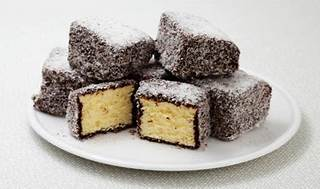

Kizza's Lamingtons

Lamingtons are a classic Australian dessert that consist of a buttery sponge cake coated in chocolate and coconut.
The sponge in this recipe is moist and buttery, and can be optionally sandwiched with jam and cream
Ingredients
- 125g unsalted butter, softened
- 1 cup white sugar
- 1/2 tsp vanilla extract
- 3 eggs, room temperature
- 1 3/4 cups plain flour
- 3 1/2 tsp baking powder
- 1/2 cup milk
- 4 cups icing sugar
- 1/3 cup cocoa powder
- 1 tbsp unsalted butter
- 150ml boiling water
- 4 cups shredded coconut
- Strawberry jam (optional)
- 1 cup cream (optional)
Ingredients
- Preheat the oven to 180°C (350°F). Grease and line a 20cm (8 inch) square cake tin
- In a large bowl, cream the butter, sugar and vanilla extract together until light and fluffy
- Add the eggs one at a time, beating well after each addition
- Sift the flour and baking powder together and add to the butter mixture, alternating with the milk. Mix until just combined
- Pour the mixture into the prepared tin and bake for 30-35 minutes or until a skewer inserted into the centre comes out clean
- Allow the cake to cool in the tin for 5 minutes before turning out onto a wire rack to cool completely
- Cut the cake into 15 squares
- To make the icing, combine the icing sugar, cocoa powder, butter and boiling water in a large bowl. Stir until smooth
- Place the coconut in a shallow dish
- Using two forks, dip each square of cake into the icing, then roll in the coconut to coat
- Place the lamingtons on a wire rack to set
- If desired, spread a little strawberry jam and whipped cream between two lamingtons to make a sandwich. Dust with icing sugar and serve